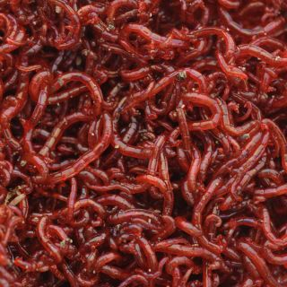
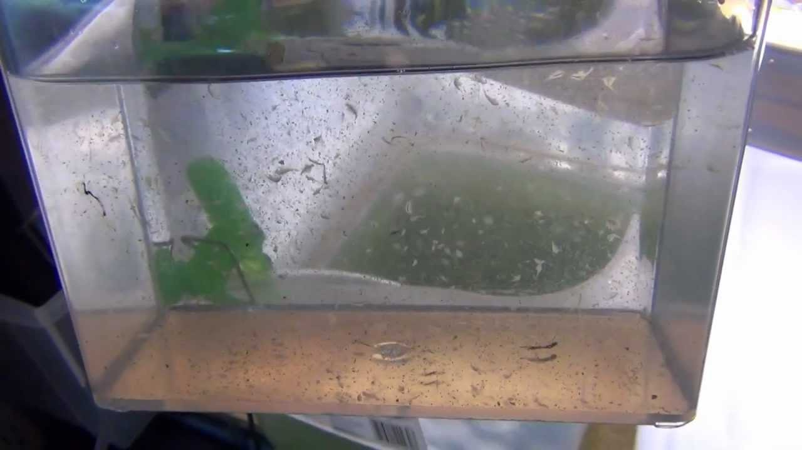
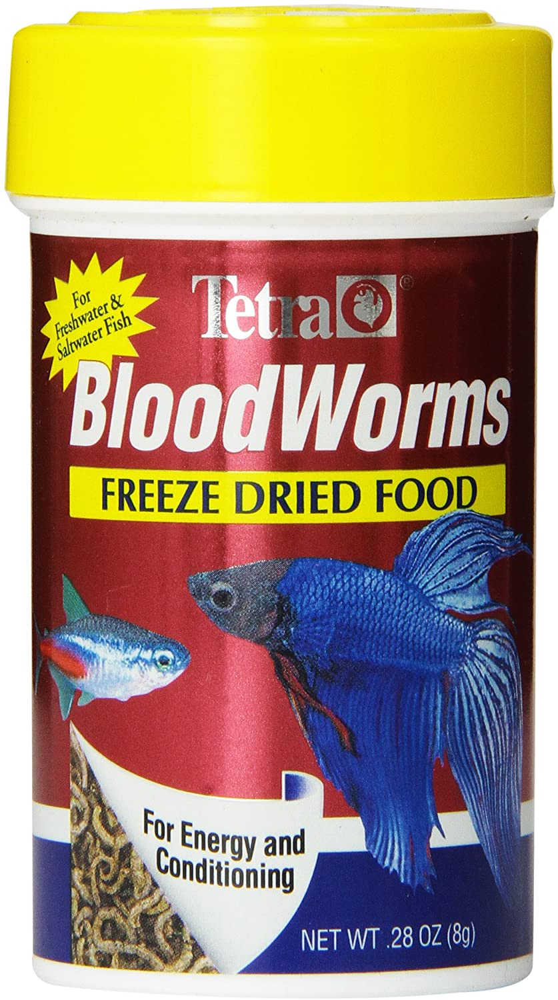

June 1, 2020
Betta Fish Food:
Betta Pellets:

Pellet food is one of the most common food for betta fish they are one of the staple food which betta fishes can eat most of the days it is very easy to eat for them. Pellets has a lot of protein content which your betta fish needs in these pellets there is a minimum of 35% protein.
These pellets are floating pellets so they float in water which is a big advantage because it does not make the water dirty. It is very easy for your betta fish to digest it does not cause constipation, swimbladder etc.
This pellet food does not have any kind of artificial colors added so it is totally 100 % healthy for your betta fish. Feeding your betta fish this fish food will help to make its color beautiful.
It won't cloud your aquarium water which is great. Betta fishes love this food.
You have to feed your betta fish twice a day it is reccomended not to feed a betta fish more than twice a day because this may lead to overfeeding and that can lead to other harmful diseases. Attached below is the amount of betta fish food you have to feed to your betta fish during 1 feeding time.
You have to feed the same way twice a day.

Live Food:
Live food is very much needed for a betta fish since betta fishes are carnivores in their orginal environment they eat small insects etc. However the best live food for betta fishes include brine shrimp which is one of the best for betta fish they have a high protein content which is really great.
Bloodworms are also a great live food for betta fish. Betta fishes get really happy when you feed them live food. We can find live food in most of the good pet stores which are available.
There is a disadvantage feeding betta fish live food this is because some of the live food can carry diseases which can harm your fish. To avoid the live food from having any diseases it is better to purchase live food directly from a fish farm that you trust.
Make sure you only feed live food to your betta fish once a week if you feed for more then your betta fish can get bloated belly. Live food like blood worms help to a very large extent to enhance the color of your betta fish.


Frozen Food:
Frozen food is another form of food available for betta fishes this food as the name suggests is in frozen form and is stored in the refrigirator. Frozen food is in the form of cubes.
Bloodworms in frozen form it is much healthier because any of the diseases and infections which the bloodw worm had would die due to the temperatures in the refrigirator.
However before feeding frozen food to your betta fish you must defrost them in ur microwave and feed them a small quantity.
Freeze Dried Food:
Freeze dried betta fish food is not a good food to feed to your betta fish because it has a lacks a lot of important nutrients and vitmains these nutrients and vitamins are lost in the drying process of the food.
Also due to low moisture the food expands inside the body of the fish this can lead to swim bladder disease and the fish will be unable to swim properly.
If you decide to feed your betta fish freeze dried bloodworms then you must make sure that you soak the food in water for sometime and leave it there so that the food absorbs moisture and does not expand inside the body of your fish.
However, feed your betta fihs freeze dried food only twice a week not more than that we must make sure we give it flake food or pellets as its main diet.

An Awesome Youtube Video That Can Help You Choose You Food For Your Betta Fish:
This video is a very informative guide posted by the youtube channel Girl Talks Fish. A very informative channel related to aquarium fish contain.